ImageMagick Examples --
 Creating Thumbnails and Framing
Creating Thumbnails and Framing
Thumbnail Storage
I would like to first start with one very important point. The original image from video cameras and photo scanning should be kept in a safe place in the original format, preferably a non-lossy format (not the JPEG image format), without any modification resizing or other change, except possibly a file name change. Of course a scanned image can be re-scanned, but it is far better to re-use your original source than to re-do it from a already degraded copy later. This is VERY important as any form of modification will mean a loss of some information in the image, and provides a source from which you can re-work your image for other uses. The original image does not have to be your working image, which may be resized or color adjusted for display, just be sure to have your image saved and backed up somewhere safe for future use. The next thing to do, even before you create any thumbnails, is to decide how you want to save your thumbnail relative to your normal sized image format, then stick to that scheme. This is especially important for web pages. Schemes include...- Save the main photo image in the lossy JPEG format at the size you want or need, then use the same name for the generated thumbnail but using the GIF image format. EG Same filename but a different format and suffix. Main Image:
photo_name.jpg Thumbnail: photo_name.gif - Store the thumbnails with the same name in a sub-directory called for example "
thumbs" or whatever is convenient for you. Main Image:photo_name.jpg Thumbnail: thumbs/photo_name.jpg - Use the same format as the original image, but with an extra string added to the file name. Typical string additions include "
_tn", "_small", "_thumb", etc... Main Image:photo_name.jpg Thumbnail: photo_name_tn.jpg - Some combination of the above. There is no reason why you cannot save thumbnails in different image format, with an extra image suffix appended to the filename, and saved in a subdirectory! Main Image:
images/photo_name.jpg Thumbnail: thumbs/photo_name.jpg.gifThis is actually quite common on the WWW, and I have even seen the the two directories stored on completely separate machines!
magick mogrify" to generate all your thumbnails, without destroying the original image, by using a "-format" setting to specify the output image format. As of IM v3.2.0, the second scheme is now also possible to do with "magick mogrify" thanks to the addition of a special "-path" setting that specifies a different directory in which to save the modified images. For example, this converts JPG images into GIF thumbnails in a "thumbs" sub-directory that was just created.
mkdir thumbs magick mogrify -format gif -path thumbs -thumbnail 100x100 *.jpg |
magick mogrify", create a special script to process the images, or some other DIY method. A number of the simpler non-IM techniques are detailed at the end of the example section for Batch Processing - Without using "magick mogrify". Whatever method you choose the important thing is to choose a scheme for thumbnail storage, and then stick with it. By using the same scheme for all your thumbnails you can then write shell or Perl scripts to make thumbnail generation and even generation of the HTML links easy. More on this later.
Selection of the Thumbnail format
The format in which you save a thumbnail can make a big difference to its final size on disk and download speed for web pages. In this regard I recommend you study the summary of the various Common File Formats. Specifically you should note...- JPEG compresses well and is lossy, but is designed for large real world images, not small thumbnails. It also does NOT allow any form of transparency. In summary, the format is good for large images, bad for thumbnails. Watch out for profiles (see next section). While JPG is not recommended for thumbnails, for viewing images on the WWW it is recommended you use smaller 800x600 pixel image, at a much lower "
-quality" percentage (say 50 or even 30%), though it will not look very good. It has also been suggested that using "-sampling-factor 2x1" will also produce a smaller JPEG image size. I do not recommend the full original image never be placed directly on the web, unless temporarily (at a referenced location) for a friend to download. Remember do not link to it, (even by directory indexing), and never for more than a day, or it may be Googled. - GIF works for simple small images, and compresses okay. It has a color limit of 256, but for small images this is rarely noticeable. It can also do cartoon like animations of images, not that that is needed for thumbnails, unless you really what to get fancy. What is a problem is that the format only has Boolean (on/off) transparency, which makes for horrible looking borders on shaped images. The solutions to that is to design the thumbnail to only use Boolean transparency, or arrange it so it can only be used on a specific background color. For details see the examples on GIF's on a background color or pattern.
-
PNG is the modern ideal format for thumbnails. It has a good compression, and internal format styles. It is non-lossy, and can display all colors, and these days it is understood by almost all browsers, (though for Microsoft Internet Explorer, before v7, needs some java scripting added to web pages). More importunately this format understands semi-transparent color, making shadows and edges sharp and clear, or faded and blurry as you wish. This format however does not do animations, though the related MNG format does. Very few browsers seem to support that format however. For thumbnails you can reduce the size of the final image by reducing the depth and number of colors, as well as setting a higher "
bzip" compression quality (first digit in "-quality") for your final thumbnail image. For example, the following is suggested for small PNG thumbnails that does not involve transparency.Which uses a smaller, 8 bit, or 256 color limited, PNG format. You can also re-process the final image though secondary applications (See Non-IM PNG Processing) which can automatically find the best PNG compression for that specific image. There are also programs to do that color reduction to the smaller internal PNG format, while preserving semi-transparent colors. This is something IM currently does not handle. .-strip -quality 95 PNG8:thumbnail.png
Do NOT use JPEG, PNG8, or GIF for intermediate working images!
Better to use PNG or MIFF.
Better to use PNG or MIFF.
Profiles, Stripping, and JPEG Handling
Many images from digital cameras, scanning software, and some paint programs (photoshop is notorious for this), save extra information about the image in the form of profiles. This includes image formats such a JPEG, PNG, TIFF and as of IM v6.2.4-1 GIF. Of course the IM specific format, MIFF also does this. (See Image Profiles for more detailed information). These profiles can be up to 60 Kb in size, so can make a big difference to your file size, and by default IM will preserve this profile information. Thumbnails have no need for this data and often not even the main image needs it. You can also remove the profiles from your images with the IM commands...
magick input.jpg -strip output.jpg magick mogrify -strip *.jpg |
-profile '*' " to remove the profiles. It is however recommended you only strip profiles when you modify an image, especially if reducing it in size for web displays, or thumbnail images. Stripping profiles while resizing, particularly for generating smaller thumbnail images, is so common that both "-resize" and "-strip" were combined into a new operation, just for this very purpose. Naturally enough this resize operation is called "-thumbnail". For example...
magick -define jpeg:size=240x180 image.jpg -thumbnail 120x90 thumbs/image.gif magick mogrify -path thumbs -format gif -define jpeg:size=240x180 -thumbnail 120x90 '*.jpg' |
Before IM v6.5.4-7 the "-thumbnail" would strip ALL profiles from the image, including the ICC color profiles. From this version onward the color profiles will be preserved. If the color profile is not wanted then "-strip" all profiles. |
magick mogrify" will of course generate thumbnails for a whole directory of JPEG images, but be careful it does not overwrite any thumbnails you want to keep. For a number of other non-IM methods for looping over a large number of images see the example section for Batch Processing - Without using Mogrify. For very large images the "-thumbnail" resize operator goes further and first scales the image down to 5 times the final thumbnail size first, before doing the actual resize operation. This speeds up the thumbnail generation further. However for thumbnailing JPEG images, an even better method of limiting the initial image size can be used, by just not reading the whole image into memory in the first place. The "-define jpeg:size=" setting (as shown in the above example) is a special hint to the JPEG image library to reduce the amount data that is read in from VERY BIG JPEG images. See Reading JPEG Files.
Before IM v6.5.6-0 this coder setting was extracted from the "-size" setting. This caused problems when users used "-size" for image creation but then had JPEG reading produce unexpected results. As such this was changed to be a special coder setting instead.In older versions of IM you may need to reset the setting using " +size before reading JPEG images, because of this 'dual' role. |
-define jpeg:size=" setting for JPEG images. As such the recommended way of resizing ANY input image format is now...
magick -define jpeg:size=240x180 input.img'[120x90]' \
-strip output_thumbnail.gif
|
General Thumbnail Creation
Generate Thumbnails in General (specific height)
Lets magick a large sample JPEG image to a GIF thumbnail 90 pixels high with the width automatically adjusted (within the 250 pixel width limit) to preserve the aspect ratio of the image.{kind=link}
|
![[IM Output]](thumbnail.gif)
|
-thumbnail" option above. This not only resizes the image, but strips any and all profile and comment information that may be present in the original JPEG image. Also as it uses the "-sample" resize operator for the initial downsizing of the image, it is faster, while producing reasonable results for small thumbnails. I also set a minimum "-define jpeg:size=" for the image being read in. This is passed to the JPEG library, which will return an image somewhere between this size and double this size (if possible), rather that the whole very large original image. Basically don't overflow the computers memory with an huge image when it isn't needed. The JPEG size hint I use is at least double that of the final thumbnail so that resize will still generate a reasonable looking result. The "-auto-orient" operator ensures that the image, if from a digital camera, is rotated correctly according to the camera's orientation. This is not needed for the 'desktop' image I am using, but I included it in the above for digital camera users. Note however that orientation can still go wrong, especially for photos viewing directly down or up, such as when taking photos of documents.The result is a thumbnail of a specific height, but variable width. I use this thumbnail for my own web pages so that a series of image in a row, will all match up height wise, forming a neat look. The 250 pixel width limit in the above is important. If left unset, (EG: using "-thumbnail x90" ) IM would could have problems when generating thumbnails of very long thin images such as those shown in Web Line Images. The result in that case would be very very long, enlargement of the image, instead of a small thumbnail. Some people (including myself) find that while IM's resize is one of the best implementations (See IM Resize vs Other Programs), the result is still a little blurry. As such you can improve the above result by sharpening the image slightly (using "-unsharp") after the "-thumbnail" resize operation. For more information see Sharpen Resized Images -- Photoshop Resize Technique, But really it all comes down to a matter of personal taste.The "
magick mogrify" version is the same as the "magick" command (with no initial input images), but will but will generate automatic thumbnails of every JPEG image in the current directory. The image argument is quoted so that IM itself will scan the directory, and not the command line shell. This prevents 'line limit overflow errors' on directories containing a huge number of images.
magick mogrify -format gif -define jpeg:size=500x180 -auto-orient \
-thumbnail 250x90 -unsharp 0x.5 '*.jpg'
|
Note that "magick mogrify" will blindly create thumbnails, replacing any existing images of the same name. GIF images in this case. Extreme caution is always advised when using this command.Backup copies are always recommended before doing any processing. |
Instead of specifying a different format (using "-format") so as to prevent "magick mogrify" from overwriting the original source images, you can use a "-path" setting to define a separate thumbnail directory. You can use both output options. |
magick mogrify" can output the new images with a different suffix ("-format") or directory ("-path"), they are your only options using this command. If you are also wanting to change the name of the image, such as adding a "_tn" or "_sm" to denote thumbnail or small versions of the image, then I recommend you create a shell script to do the job for you, processing them one at a time using "magick". I wrote such a script to do this, while simultaneously generating HTML indexes at the same time.Resize Thumbnail to Fit
Another form of automatic thumbnail generation is shrink image to fit a fixed sized box, say "100x100" but keeping the images aspect ratio. Well that is the default meaning for a resize geometry setting.
However I prefer not to enlarge images which already fit such a box. For that you need to add a ">" to the geometry string.
|
![[IM Output]](rectangle.gif)
|
Pad Out the Thumbnail
The next most common request is to generate thumbnails that fill out the image with borders of a specific color (usually 'black', or 'transparent' but for these examples I will use 'skyblue') so the thumbnail is exactly the size you wanted. For example: An image which is 400x300 pixels shrunk to fit a 100x100 pixel box will normal (with the above) have a size of 100x75 pixels. We want to add some padding borders to the top and bottom of the image (and to the sides to be sure) to make the final thumbnail image always 100x100 pixels in size.
There are a number of ways to do this, and as of IM v6.3.2 the best way is using the Extent Operator.
|
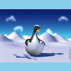 |
{kind=link}
As of IM version 6.2.5, you can also use a Viewport Crop, and flatten the result onto a background color.
|
{kind=link}
The key difference between usingExtent and a Viewport Crop is weather you want a minimal Virtual Canvas or have the whole area 'padded out'. Another method to pad out an image is to overlay the thumbnail onto a background image (actual image, solid color or tiled canvas) that is the right size, in this case the 128x128 "granite:" built-in image.
|
![[IM Output]](pad_compose.gif)
|
-composite" operation will need to be done by the separate "composite" command, rather than the above single command method. However an image processing point of view all the above are actually doing the same thing.
Cut the Thumbnail to Fit
An alternative, is rather than pad out the image to fit the specific thumbnail size we want, is to instead cut off the parts of the image that does not fit the final size. Of course this means you actually lose some parts of the original image, particularly the edges of the image, but the result is an enlarged thumbnail of the center part of the image. This is usually (but not always) the main subject of the image, so it is a practical method of thumbnail creation. As of IM v6.3.8-3 the special resize option flag '^' was added to make this easier. We just resize using this flag then crop off the parts of the image that overflows the desired size.
|
![[IM Output]](cut_to_fit.gif)
|
| Before IM v6.3.8-3 when this special flag was added, you would have needed some very complex trickiness to achieve the same result. See Resizing to Fill a Given Space for details. |
Area Fit Thumbnail Size
The last two methods will often make an image very small with a lot of extra padding, or, it will cut off a lot of the image so as to completely fill the space. However by using a different resize flag, it is possible to get a thumbnail that is between these two extremes. For example a 100x100 pixel thumbnail has 10,000 pixels. Now if we ask resize to size out image to something around that many pixels in size (using the resize '@' flag), you will have an image that will need both a little padding and a little cutting. This maximizes the size of the resulting thumbnail, while not cutting away too much. For example...
|
![[IM Output]](area_fit.gif)
|
Fit to a Given Space Summary
In summary, here are the results of the three methods for thumbnailing an image to a specific sized area. All three methods use exactly the same code, with just with a slight change in the resize argument/flag used.|
Padded Fit resize, no flag |
Area Fit resize, '@' flag |
Cut to Fit resize, '^' flag |
Square Padding and Cropping
The above padding and cropping methods assume you know the final size of the area in which you want the image to fit. But that is not always the case. Sometimes you want to simply 'square an image', either by 'padding' it out (external square), or 'shaving' the edges (internal square). From the IM Discussion Forums on Squaring Images a number of methods were developed.
External Squaring can be done using Mosaic to create a larger background canvas using a rotated copy of the image.
|
![[IM Output]](square_padded.gif)
|
|
![[IM Output]](square_cropped.gif)
|
|
![[IM Output]](square_external.gif)
|
|
![[IM Output]](square_internal.gif)
|
|
![[IM Output]](square_internal_2.gif)
|
| IMv7 will allow you to do the above mathematics directly as part of a crop or extent argument, which will prevent loss of image meta-data. |
Manual Cropping
The normal way I generate thumbnail images for use on my web pages, is a mix of automatic and manual scripts. The final setup of my images are..- I use a PNG or TIFF for the original ,VERY large, scan of the photo. OR the original JPEG image downloaded from a digital camera. Basically for the unmodified original source image, for archiving. I also now like to include the string "
_orig" in this images filename. - A smaller JPEG image format for a web viewable image when the thumbnail is clicked or selected. This image is resized to fit a 800x800 pixel box, which is a size suitable for viewing by most web users. I typically add a "
_md" for medium sized image, in the filename. - And lastly a GIF thumbnail resized to a fixed 90 pixel high, and variable width. This allows centered rows of thumbnails on web pages to look reasonable neat and tidy, but which automatically fills the browser windows width, no matter what size browser they are using. Again I typically now include a "
_tn" in the images filename, to denote that it is a thumbnail.
magick mogrify" from the original scanned image. This is reduces the download time and viewing size of the image to something that is practical for the typical web user (who could be logged in via modem). From these images I generate an initial set of thumbnails, again using "magick mogrify". However I often find in typical photos that the subject of the thumbnails becomes too small to make an effective thumbnail, when viewed. To fix this I examine the automatically generated thumbnails, and in about half the cases manually create my own 'zoomed in on subject' thumbnail. I read in the JPEG image, and crop it down the main subject of the image effectively 'zooming in' on the subject of the photo, and removing bulk of the background context of the image. This is then smoothed and thumbnailed, either using a "magick -thumbnail", or more often in the same graphic program I am viewing and cropping the images with (usually "XV", see below). So instead of a thumbnail where the people in the photo are hardly visible (left), I have manually cropping around the subject, highlighting the main point of the photo (right), before thumbnailing. That allows users to see the image content more clearly and thus better decide if they actually want to download and look at the larger JPEG version of the image.
| Queensland KiteFlyers, Ron and Val Field | ||
![[IM Output]](../img_photos/kiteflyers_orig.jpg) Automatically Generated Thumbnail |
Manually Cropped and Resized Thumbnail |
|
| (Click on either image for original scanned photo) | ||
magick mogrify" will overwrite any existing, possibly hand generated thumbnails, you cannot use it again after you perform any manual thumbnail generation. The "magick mogrify" command is useful, but also very dangerous as it overwrites lots of images. Always think before you run "magick mogrify" globally across all your images.
HTML Thumbnail Pages
Once I have all the thumbnail images sorted out in the directory I use a special perl script called "thumblinks" I wrote that look for the images (JPEG photos and GIF thumbnails), and generate HTML links, and even full HTML photo pages. The script will read and include size of the GIF thumbnail size in the HTML, and attach pre-prepared header and footer files around the thumbnail links. The script will also remove any thumbnail links from the list it generates, if it finds an existing link in the header or footer file itself. This may sound complex, but it makes my HTML page generation very fast and flexible, and ensures ALL image thumbnailed images in a directory have been added to that directories index page, while still letting me comment on specific images in the index header. It also makes the page independent of the users window size, automatically adjusting to suit. For a simple example of my "thumblinks" script output see Tomb of Castle Artworks. For a quick example and starting point for generating such links look at the examples of using the identify command.
FavIcon Web Page Link Thumbnail
The "favion.ico" icon often looked for by web browsers on the top level web page of a web site, for that whole site. That image is a special multi-resolution image format and can be created as follows.
magick image.png -alpha off -resize 256x256 \
-define icon:auto-resize="256,128,96,64,48,32,16" \
favicon.ico
|
image.png' can be anything you like, but should be square. If it isn't that should also be the first step in the above. You can also include larger resolutions such as 128 or 256 pixels, but few browsers would make use of them. The 16 and 32 pixel sizes are much more commonly used in such ICO files so special emphesis on those my be useful. Also remember that many browsers will color reduce the images so are to reduce the space used to store it in an users bookmarks file. This brings us to one other point. As only the smallest of images are typically used, with further color reduction, it is recommented to keep the images as small and as well defined as posible. Here is an example of manually resizing images for an ICO file format.
magick image.png -background white \
\( -clone 0 -resize 16x16 -extent 16x16 \) \
\( -clone 0 -resize 32x32 -extent 32x32 \) \
\( -clone 0 -resize 48x48 -extent 48x48 \) \
\( -clone 0 -resize 64x64 -extent 64x64 \) \
-delete 0 -alpha off -colors 256 favicon.ico
|
As mentioned only the "
favion.ico" image found on the top level directory of a web site is generally used, however you can also specify the location of the link thumbnail image by adding the following HTML tag to the headers of your pages...
<LINK REL="icon" HREF="/path/to/favicon.ico" type="image/x-icon"> <LINK REL="shortcut" HREF="/path/to/favicon.ico" type="image/x-icon"> |
/path/to/favicon.ico" can be an absolute or partical URL/URI to the location from which the browser should pick up the web pages thumbnail image. The use of 'REL="shortcut"' is specific to Internet Explorer (before IE9), and not offically part of the HTML specification. It is posible to merge the two HTML tags together using 'REL="shortcut icon"' however by keeping the tags separate you can make use of a non-ICO image file format (such as SVG) for non-IE browsers, such as firefox. Remember if this html element is not used the "favicon.ico" file found on the top level directory of the web site is used instead (if present). The ICO image format is universally understood by all modern browsers. All except Internet Explorer also can use JPEG, PNG, and GIF image file formats, for the link thumbnail. A few like FireFox can even make use of animated GIF's or SVG image file formats. However as these latter formats can not typically hold multiple images at different resolutions and color counts, it is probably better to stick with the ICO file format for the "favion.ico" image.
Other Non-IM Techniques
The "XV" program I use for manual image processing also generates thumbnail images, in a sub-directory called ".xvpics". The format of the images in this directory is the programs own special thumbnail format (ignoring the filename suffix in that directory). These thumbnails are limited to 80x60 pixels so are a little on the "small" size (unless you hack "xv" to use larger thumbnails -- see link below). IM understands the "xv" thumbnail format (which is based on the "NetPBM" image format), so you can generate all the thumbnails quickly using XV, then magick the XV thumbnails of the JPEG images, into GIF images for further processing...
xv -vsmap & # generate thumbs with the "Update" button rm .xvpics/*.gif # delete XV thumbs of existing "gif" thumbnails magick mogrify -format gif .xvpics/*.jpg mv .xvpics/*.gif . # move the new "gif" thumbnails to original dirIf you are sick of the small size of XV thumbnails, particularly with larger modern displays, you can hack the XV code. See my XV modification notes, which allows you to get XV to use a larger thumbnail size. I myself use 120x90 pixel thumbnails.
Further Processing -- Adding Fluff
The above is only the beginning of what you can do to make your thumbnails more interesting. Beyond the basic thumbnail image you can add borders, rotations even with some random selection of style to make your thumbnail gallery that much more interesting. Additions to thumbnails like this, is what I term 'fluff', as in the extra lint you find covering your clothes after you wash your clothes. That is, it adds unnecessary extras to the thumbnail, but which can make web pages and index images that much more interesting. Be warned that many of the following methods and processing is very complex and my require a deeper knowledge of the various image processing options options of ImageMagick.Adding image labels
During your thumbnail creation you can also add labels either above, below or even on top of your thumbnail. This sort of image processing is however covered more thoroughly in Annotating Images with Labels. Just remember to use the "-thumbnail" or "-strip" rather than a "-resize" in those examples.For example...
|
{kind=link}
|
![[IM Output]](annotated.gif)
|
thumbnail.gif" image, or use the Thumbnail Resize Operator to strip the profiles and comments from the image. I then used "+clone", "+sample", and "-alpha", to generate a larger transparent working canvas, which also contains a copy of the original image's meta-data. This lets me use the images 'comment' string with the annotate "-annotate" operator, to supply the text to overlay on the image. Only at the end after I have composed the text overlay do I clean up and "-strip" that information.
Raised Button
The "-raise" operator was basically created with the one purpose of highlighting the edges of rectangular images to form a raised button. It is a simple, fast, and effective thumbnail transformation.
|
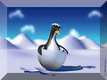 |
{kind=link}
The same operator has a 'plus' form that can be used to make a sunken highlighting effect.
|
![[IM Output]](sunken_button.gif)
|
Bubble Button
With some trickiness the "-raise" operator can be used to produce a smooth 'bubble-like' raised button.
magick thumbnail.gif -fill gray50 -colorize 100% \
-raise 8 -normalize -blur 0x8 bubble_overlay.png
magick thumbnail.gif bubble_overlay.png \
-compose hardlight -composite bubble_button.png
|
{kind=link}
![[IM Output]](bubble_button.png)
Adding Borders
The humble simple "-border" operator can be used to generate some a complex framework around an images.
|
![[IM Output]](border_framework.gif)
|
Simple Frame
In a similar way the "-frame" operator makes it easy to add a frame around the image
|
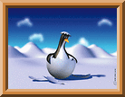 |
{kind=link}
Montage Framing
The montage command provides a much easier way of doing all the above, and much more. It cannot only generate thumbnails (or whole pages of thumbnails), but it can label the thumbnails to include information like filenames, disk size, and dimensions, or an user specified string.
Here is a simple use of "magick montage" to generate a framed thumbnail.
wrjpgcom". See Non-IM JPEG Processing for more details.
|
{kind=link}
{kind=link}
Soft and Blurred Edges
The Vignette Operator provides a simple means to add a blurry edge around an image.
|
![[IM Output]](vignette.png)
|
|
{kind=link}
10\!' distance scaling flag. This was only added in IM v6.6.1-6. This has the added advantage of also working for shaped images, though a more complex initialization is needed to correctly preserve and anti-aliased pixels in the distance formula. See Feathering Shapes using Distance for more details. The feathering here is a pure linear gradient, and can be further adjusted using Sigmoidal Non-linearity Contrast Operator to give it a smoother more tapered look in a number of different ways. You can also Feather Images using Blur, using the same method of adding a transparent Virtual Pixels before bluring just the alpha channel. This generates a more softer feathering to the image, as well as noticeably rounded the corners of the image.
|
![[IM Output]](soft_edge.png)
|
-level" operation (adjusting only the transparency channel) ensures the edge becomes fully transparent, rather than only half transparent. However it does fall sharply toward zero at the actual edge, due to the sigmoidal-like curve that blur generates. It also has an additive effect in the corners, causing them to become rounded, while with a shaped image with a sharp concavity, it can cause fully-transparent pixels to become semi-transparent. As such for shapes you may need to mask the result against the original image (using Dst-In Composition). For rectangular thumbnails however the result is satisfactory.You can see another example of using this type of feathering in Layered Thumbnails. If instead of doing a level adjustment on the blurred feather, you can Threshold the blurred alpha channel at '50%', so as to add psuedo-rounded corners to the above thumbnail image.
|
{kind=link}
-blur" operation can become very slow when you work with a large argument for generating a larger rounded corner. As such this method of rounding corners on a large scale is not recommended at all. For a more unusual blurred edge effect, you can use a Radial Blur on just the alpha channel.
|
![[IM Output]](radial_blur_edge.png)
|
|
![[IM Output]](radial_blur_vignette.png)
|
Rounded and Shaped Corners
While thresholding a Soft Blurred Edge (see above) will generate a rounded corner suitable for the Boolean transparency of GIF, it does not generate a smooth 'anti-aliased' corner. The proper way to generate an image with rounded corners, or of any other shape is to actually cut out each corner using a mask of the shape wanted. The following method from Leif Åstrand <leif@sitelogic.fi> that multiplys a full image mask to generate the appropriate result.
|
![[IM Output]](rounded_corners.png)
|
|
![[IM Output]](corner_cutoff.png)
|
Red' in this case) rather than making them transparent.
|
{kind=link}
The last example will fail for versions of IM before v6.6.6-5 due to both the "-flip" and the "-flop" operators not handling the virtual canvas offset correctly. |
|
![[IM Output]](circle_masked.png)
|
Torn Paper Edge
Leif Åstrand <leif@sitelogic.fi>, contributed the following IM code to generate an edge that looks like it was torn from a fibrous paper (like newspaper)...
|
![[IM Output]](torn_paper.png)
|
|
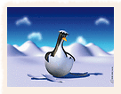 |
{kind=link}
Adding a Shadow
The "-shadow" operator makes the Generation of Shadows of any shaped image easy. For example, here an I add a semi-transparent colored shadow, to the thumbnail.
|
![[IM Output]](shadow_hard.gif)
|
But you can just as easily create soft fuzzy shadows, too.
|
![[IM Output]](shadow_soft.png)
|
-background" color for the web page or larger canvas on which you plan to display your thumbnail, as these formats do not handle semi-transparent colors. Warning, while the above works for individual thumbnails, it will generally fail when you want to layer multiple thumbnails over the top of each other. The reason is that shadows do not accumulate together, in the same way that normal images do. To see how to handle shadows from multiple layered images see Layers of Shadows.
Adding Some Thickness
Adding a thickness to an image or a shape look a bit like adding a hard shadow (see above), but isn't quite the same, and needs some extra work to get right. This is actually very tricky as we create a colored, mask of the image which is then replicated multiple times and layered under the original image (using 'DstOver' composition) with increasing offsets to give the image thickness.
|
![[IM Output]](thickness.gif)
|
\( +clone ... \)' line adds one extra pixel to the image in a south by south-easterly direction. Also as no semi-transparent pixels are involved (at least for a rectangular image) you can use the GIF image format for the result. The major problem with this technique is that it is hard to specify a thickness as a variable argument or at different angles, unless you write a specific script to add thickness. Also the edge of the angled parts of the thickness is not anti-aliased, so there is lots of room for improvement.
Polaroid-like Thumbnails
You can make your thumbnail image look like a polaroid photo, give it a shadow, and even rotate it a little so as to appear to be just sitting on a table.
|
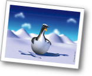 |
{kind=link}
A more complex version of the above was added to IM v6.3.1-6 as a "-polaroid" transformation operator. For example...
|
![[IM Output]](poloroid_operator.png)
|
You can even add a "-caption", set your own shadow color, specify your own rotation (or none at all).
|
![[IM Output]](poloroid_caption.png)
|
|
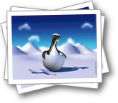 |
{kind=link}
The " `magick ...` " embedded command in the above example generates a random floating point number from -15 to +15. For more infomation on using IM as a mathematical calculator see FX Expressions. An alturnative is to assign random numbers to shell variables and substitute them into the above command instead. |
LightSteelBlue' color in the case of these pages.
|
![[IM Output]](poloroid.gif)
|
|
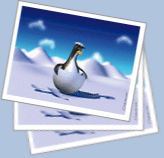 |
{kind=link}
- The framing has been hardcoded into the above, and depends on the size of the thumbnail image. In a real application the framing may be moved to the thumbnail generation stage rather than in the above photo spread.
- As "
-rotate" also expands the size of the canvas the position in which images are added is changing, unless you place them using an offset from "-gravity center" position. - And finally, a constantly rotating the background frame is not a good idea in terms of quality. Rotating an already rotated image, adds more pixel level distortions to the result than doing one rotate for each separate image before being overlaid.
Framing Techniques
Here we will look at some advanced framing techniques that use some very advanced knowledge of how IM works to achieve the desired results.Self Framing (External)
Self Framing is a technique that can be used to frame an image, using the image itself to generate the framing colors and patterns. That is, to say the added frame is not fixed, but varies so as to roughly match the image being framed. You can do this in two ways. Extend the original image so as to create, an External Frame, or use part of the actual image itself to create an Internal Frame. For example, if we enlarge the image and dim it, before overlaying the original image on top, we get a very nice looking frame.
|
![[IM Output]](self_bordered.gif)
|
| Instead of using Level Adjustments to brighten (or darken) the framing image, an alturnative way of making the border a lighter or darker color is to Color Tint the frame using something like... " -fill white -colorize 30%" |
|
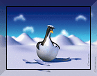 |
{kind=link}
|
![[IM Output]](self_blurred_edge.gif)
|
|
![[IM Output]](self_blurred_dither.gif)
|
|
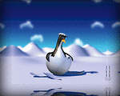 |
{kind=link}
imageborder" to make self framing images easier, with borders being generated from blurred magnifications of the original image, or some form of Virtual Pixel setting defining the contents.
Self Framing (Internal)
Rather than enlarging the image to add the new border, we can magick parts of the image itself into a border. We have already seen some techniques of adding a frame, inside the image itself. The Raised Button and Bubble Button techniques do this, using the "-raise" operator. Here we generate a lighter blurred version of the original image which is then overlaid using a mask also generated from the original image. A white edge is then added to separate that lighter blured version from the center un-modified part of the image.
|
![[IM Output]](self_blurred_border.gif)
|
|
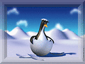 |
{kind=link}
VividLight' composition with the framed mask image to better preserve primary colors.
|
![[IM Output]](inside_frame_light.gif)
|
HardLight' compose which does not enhance primary colors, with a blurred frame lighting mask.
|
{kind=link}
| Some Light Composition Methods may require you to Swap the Images before you compose them to get the correct lighting effect. |
Simple Border Overlay
One simple type of framing is to create a fancy frame, or shaped image into which you can place your image, under the frame. For example, here we generate a simple frame slightly larger than our image with a fancy shaped hole. The shape was extracted from the 'WebDings' font (character 'Y'), but there are a lot of possible sources for fancy shapes that could be used for picture framing.
|
{kind=link}
You can also optionally give the frame a little depth by using a Shadow Effect.
|
{kind=link}
Now that we have a simple overlay frame, we can underlay the image in the center, underneath the frame by using a 'DstOver' composition.
|
{kind=link}
magick thumbnail.gif autumn_leaves.png +swap \
-gravity center -compose DstOver -composite \
border_leaves.gif
|
![[IM Text]](../images/autumn_leaves.png)
{kind=link}
DstOver' to place the second, main image 'under' the frame. That way it is the frame that determines the final size of the image, and not the original image. However doing this would also loose any meta-data the main image has (for the same reason). If you really want to preserve the thumbnails meta-data (such as labels and comments, such as a copyright message), then the best idea is to Pad Out the Thumbnail to the same size as the frame, than this use the default 'Over' composition to overlay the frame. That way the thumbnail is the 'destination' image and its image meta-data is preserved.
Badge Overlay Example
Here is another more complex pre-prepared overlay example this time using a correctly sized image (using extent as a crop method), from the IM Forum Discussion Composite Overlay and Masking. Note that the image itself is not distorted, just lightened and darkened slightly, a circle cut out and shadow added, all in the one overlay image. If this was a real badge, or 'glass bubble' then the image should also be distorted a little too (perhaps using a Barrel Distortion), but it works well without needing such distortion. For the next step in the 'badge' example, see Badge using Mask and Paint, which adds background transparency around the outside of the badge.{kind=link}
Mask 'n' Paint Technique
In many cases you don't just want to overlay a square border around an image, but also want to cut out the image edges, to transparency. For this you would typically use at least two images. One is the masked overlay containing the colors, shadows and highlights you want to add to the existing image. And a second image containing the parts you want to remove from the original image. The two images can be applied in two different ways. You can either 'mask' first to remove the unwanted parts from the image, then overlay the frame, or you can overlay a frame, and then mask the unwanted parts of both the original image and overlaid colors to transparency. Which method you use is critical, and the images involved will be designed for a specific technique. You can not use images for one method in the wrong order or things will not work properly. For example lets create more complex shaped border but this time don't worry about setting the background.
|
![[IM Output]](border_ellipse.png)
|
To make it more interesting give this 'fuzzy' border a random bit of coloring.
|
![[IM Output]](border_ellipse_red.png)
|
Okay we have a border, but we still need some way of defining what should represent the outside and inside of the border. Basically we need a mask to define these two areas.
|
![[IM Output]](border_ellipse_mask.png)
|
magick thumbnail.gif -alpha set -gravity center -extent 120x100 \
border_ellipse_mask.png -compose DstIn -composite \
border_ellipse_red.png -compose Over -composite \
border_mask_paint.png
|
{kind=link}
|
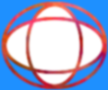 |
{kind=link}
|
{kind=link}
Border with Rounded Corners
As you saw above the Mask 'n' Paint Technique can be used to both add extra colors or 'fluff' to an image, but also remove parts, so as to shape the final image. This presents us with an alternative way of adding rounded corners to an image. The IM "-draw" operator comes with a 'roundrectangle' method that can be used to provide an interesting frame around the image. However you need to size the dimensions of this draw method to match the image. IM does provide methods to extract and even do mathematical calculations based on the image size. The coordinates at which to locate the rectangle is for the exact 'center' of the stroke-width used to define the rectangle (it can be a floating point value). Also it is given in terms of 'pixel coordinates' (see Pixel vs Image coordinates), which means that a value of 1,1 refers to the second pixel form the top and left edges, but more importantly it refers to the 'center' of the pixel which is in reality 1.5 units from the real top and left edges. Now we will use a stoke width (SW) of 3, that makes the image 3 pixels larger on all sides. It then means the rectangle will be positioned SW/2 - 0.5 or 1.0 pixels from the top left, and ImageSize + SW*1.5 - 0.5 or Image size + 4 pixels at the bottom right. Here we use IM itself to do these calculations, generating the exact draw command that are need using fancy FX escapes. This is saved as a Magick Vector Graphics File that can be directly used by draw in later commands.
|
| 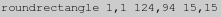 |
| If you can figure out the image size in a different way (using the shell, or other API language wrapper) you can substitute the appropriate draw parameters directly into the next examples, rather then use an FX mathematical expression. Basically the above makes this whole process independent of the actual size of the thumbnail. Any other way, including direct hard coding is also acceptable. |
magick thumbnail.gif -border 3 -alpha transparent \
-background none -fill white -stroke none -strokewidth 0 \
-draw "@rounded_corner.mvg" rounded_corner_mask.png
magick thumbnail.gif -border 3 -alpha transparent \
-background none -fill none -stroke black -strokewidth 3 \
-draw "@rounded_corner.mvg" rounded_corner_overlay.png
|
![[IM Text]](rounded_corner_mask.png)
![[IM Text]](rounded_corner_overlay.png)
|
{kind=link}
|
![[IM Output]](rounded_border_in_one.png)
|
Badge using Mask 'n' Paint
Here is a much more complex "mask 'n' paint" example, that was developed from the image used previously in the Badge Overlay example above. The generation of the two images was 'fudged', and was discussed IM forums Composite Overlay and Masking. Idealy the two images would have been developed together.
magick thumbnail.gif -alpha set -gravity center -extent 90x90 \
badge_mask.png -compose DstIn -composite \
badge_shading.png -compose Over -composite \
badge_trans_bg.png
|
{kind=link}
Paint 'n' Mask Technique
Rather than 'Mask then Paint' you can use a different set of images and overlay the additional colors first, before masking out the background. That is, you can perform a 'Paint then Mask'. That is, you would take your image, and overlay the border which sets not only all of the final border colors, but also masks and colors some or all the parts outside parts the original image. You then use a separate 'outside' or 'clipping' mask to remove all the unwanted parts of the resulting image. Also note that both 'overlay' and 'masking' image defines the inside edge separately to the outside edge of the border. As a result one image does not completely define the whole border in a single image, which can make it a little harder to use. However it can be simpler to implement. For example...
magick -size 120x90 xc:none -fill black -stroke black -strokewidth 0 \
-draw 'ellipse 45,45 55,37 0,360' \
-channel RGBA -negate -blur 0x3 +channel \
\( granite: -auto-level -blur 0,0.7 \) \
-compose ATop -composite border_paint.png
magick -size 120x90 xc:none -fill black -stroke black -strokewidth 5 \
-draw 'ellipse 59,45 56,40 0,360' border_mask.png
magick thumbnail.gif -alpha set \
border_paint.png -compose Over -composite \
border_mask.png -compose DstIn -composite \
border_paint_mask.png
|
{kind=link}
{kind=link}
{kind=link}
Page Curl Corners
Fred Weinhaus created a special shell script called PageCurl which will, add a simple page curl to an existing image, using some very complex mathematics (in shell). For example...
|
{kind=link}
-i "pagecurl" option added to the script for this purpose).
|
{kind=link}
{kind=link}
pagecurl_overlay.png" and "pagecurl_mask.png" shown. The input image itself does not matter as it is the masking images that we want. The 'page curled' result is just junked using the special "null:" image file format.
|
{kind=link}
-gravity" setting ensures that the two overlay images are positioned in the lower right corner. And the special Define Setting 'compose:outside-overlay=false' will prevent the mask image from erasing the parts of the image not covered by the smaller image. See Outside-Overlay Setting for a full description. If you like to apply this to a lot of images you can use the "magick mogrify", using a special technique involving using "-draw" to do the Mogrify Alpha Composition. However this method of composition does not understand the special define setting, so it will only work with images, overlays, and masks that are all the same size.
pagecurl -e 0.5 -i /tmp/pagecurl {one image} null:
magick mogrify {magick mogrify -format and -path options} -alpha set \
-draw 'image Over 0,0 0,0 "/tmp/pagecurl_overlay.png"' \
-draw 'image DstIn 0,0 0,0 "/tmp/pagecurl_mask.png"' \
{all images to be pagecurled}...
|
Fancy Corner Overlay
Here we look a bit deeper into used this 'double masking' technique to modify an image in different ways in different areas, rather than applying a single large mask or frame to the whole image. In this case we will only double mask the corners. The rest of the border (to match) is added separatally.![[IM Output]](../images/fancy_orig.gif) The corner images I will use was generated from the original source (shown right) which I found in the DIY Frames Section of Anthony's Icon Library. There are others in this section, so you may like to have a look. If you find something on the net, please let me know as I like to collect interesting corners, and edging techniques.
The corner images I will use was generated from the original source (shown right) which I found in the DIY Frames Section of Anthony's Icon Library. There are others in this section, so you may like to have a look. If you find something on the net, please let me know as I like to collect interesting corners, and edging techniques. ![[IM Output]](../images/fancy_sub.gif)
![[IM Output]](../images/fancy_add.gif) A color overlay and masking image was generated, from that initial image, so that we could use a Paint 'n' Mask technique, for overlaying the corner onto the image. Notice that these images, did not actually use any semi-transparent pixels, or even any shading of colors. As such this fancy border can be used to produce clean looking 'GIF' thumbnails for web pages. The complication with using corner masks, is that they only mask the corners of the original image. Because of this the original image first needs to be given the appropriate set of extra border colors. After that the two corner masks, must be composted onto each of the corners of the expanded image.
A color overlay and masking image was generated, from that initial image, so that we could use a Paint 'n' Mask technique, for overlaying the corner onto the image. Notice that these images, did not actually use any semi-transparent pixels, or even any shading of colors. As such this fancy border can be used to produce clean looking 'GIF' thumbnails for web pages. The complication with using corner masks, is that they only mask the corners of the original image. Because of this the original image first needs to be given the appropriate set of extra border colors. After that the two corner masks, must be composted onto each of the corners of the expanded image.
|
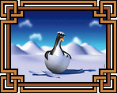 |
{kind=link}
Note that to preserve the transparent border that is being added, you must set "-compose" setting to 'Copy' rather than the default of 'Over'. If you don't then the transparency will be filled by the next border color added, in this case with 'Black'. See the Border Operator for details. |
Badge using Paint 'n' Mask
The same badge image processing seen previously in Badge Overlay and Badge Mask 'n' Paint, can also be performed by painting then masking. Here we first paint all the colors an shades onto the then mask out the final transparency of the image.
magick thumbnail.gif -alpha set -gravity center -extent 90x90 \
badge_paint.png -composite badge_shape.png -compose DstIn -composite \
badge_paint_mask.png
|
Lighting Mask Technique
Glass Bubble Button
The next level of complexity in thumbnail processing is the application of very complex lighting effects. The trickiness here is not so much the application of a lighting effect to an image, but the generation of the appropriate shading effect. For example using a Aqua Effect you can give an thumbnail a very complex shading effect that makes it look like it has been enclosed by a 'bubble' of glass. Also this works better with a thumbnail that has Rounded Corners. For lets generate a rounded corners mask for our thumbnail image, using a pure gray color.
|
![[IM Output]](thumbnail_mask.png)
|
|
![[IM Output]](thumbnail_lighting.png)
|
|
![[IM Output]](glass_bubble.png)
|
This can be taken much further however in that we can also directly add shadow effects to this lighting mask. The added color however must be pure black, and you need to ensure the lighting effect composition chosen will make an image perfectly black is the lighting mask is black. However this is actually how shadow effects are normally added to an image, as such you can just add shadows to the "lighting effect mask" directly, and all will be well! The same thing is true for adding lighting 'flares', but only using white pixels for the flare overlay. In essence a "lighting effect image" can again actually merge the two Mask 'n' Paint images back into a single image. As you will see in the next example.
Badge using Lighting Effects
Using the images from Badge using Mask 'n' Paint technique, I applied them to a pure gray canvas image, so as to quickly generate a "masked lighting effect" image, Actually I could also have used the other style of masking (Badge using Paint 'n' Mask) just as easily. I then apply the single masking image to the thumbnail reproducing the desired result.
# merge "mask 'n' paint" images with a gray image,
# to create a "lighting mask"
magick -size 90x90 xc:gray50 -alpha set \
badge_mask.png -compose DstIn -composite \
badge_shading.png -compose Over -composite \
badge_lighting.png
# Apply the single "lighting mask"
magick thumbnail.gif -alpha set -gravity center -extent 90x90 \
badge_lighting.png \
\( -clone 0,1 -alpha Opaque -compose Hardlight -composite \) \
-delete 0 -compose In -composite \
badge_final.png
|
{kind=link}
Masking images with distortions...
What is more incredible is that as as the shading colors is just a gray-scale image, you can compress the lighting effects to just one color channel and the alpha channel mask. This can then be used to free two color image channels for other image processing effects! That is, you can store other things into the single 'masking image'. Specifically you can add distortion effects into the same mask image! For more information on this see Unified Distortion Image which does exactly this! A sort of ultimate masking image.Framing using Edge Images
![[IM Image]](../images/oak_frame_sample.jpg) One common way to add a complex border to an image is to use a pre-prepared framing images, to produce a frame such as the example shown (right). However you also need to be careful with generating frames. If you look at the given example carefully you will notice that it is not quite right. The shading of the generated frame is actually incorrect. The left and bottom frame edges should be swapped to produce a correctly shaded frame for a typical top-left light source. As such before we even begin, I would like to stress the importance of using the correct image, or the correctly modified image for each edge while framing your thumbnail or photo. It is very easy to get wrong, so double check your results when you think you have it right.
One common way to add a complex border to an image is to use a pre-prepared framing images, to produce a frame such as the example shown (right). However you also need to be careful with generating frames. If you look at the given example carefully you will notice that it is not quite right. The shading of the generated frame is actually incorrect. The left and bottom frame edges should be swapped to produce a correctly shaded frame for a typical top-left light source. As such before we even begin, I would like to stress the importance of using the correct image, or the correctly modified image for each edge while framing your thumbnail or photo. It is very easy to get wrong, so double check your results when you think you have it right.
The Frame Edge Images
There are may types of images that can be used to frame an image. For example, here is 'thin black with gold trim' frame that was modified from images provided by Michael Slate <slatem_AT_posters2prints.com>.Lengthening Framing Pieces
Now in any use of these framing images, we will need to create a longer pieces that will cover the length of the image dimensions. There are only two basic ways in which this can be done. You can simply stretch the frame image using resize (without aspect preservation) so as to get the right lengths. This works for the first set of pieces shown above, which have no internal detail, but is not appropriate for any of the other framing images presented. Basically it will distort the internal detail, and may become a distraction to the look of the final image. However the other lengthening method, tiling, can be used for any framing image that has a repeating pattern or detail, which is the case with all the above images presented. If you are creating your own framing pieces, please be careful that the tiles do match up properly, and to a pixel boundary so as to ensure you have an uniform color and proper cycling of the detail in your framing images. It you don't you can get an artificial looking joint between the tiles, the become obvious because of the repeation of the tiles. In the real world picture framers also have the same problem in joining pieces together to make longer pieces. Basically it is very easy to get two different shades of wood, or very different grain pattern, that when 'dove-tailed' together, makes the joint very obvious. So really your not alone in this problem. The 'bamboo' framing images, will need to be tiled. Though as the detail is restricted to a small area on the image, you can get some interesting random tiling effects, that may need some randomized lengthing and shortening of the peices to remove. I will not go into this however, and will leave it as an exercise for those that are. For our examples, and because it works for just about all framing images I will use a simple constant tiling method to generate the longer edge lengths needed.Over-simplistic Append
We can just lengthen the simple 'bamboo' frame above, by tiling it to the right length, then append the images together. The tiling is done simply by the special Tiled Canvas image generator "tile:" to tile an image that is being read in.
|
![[IM Output]](frame_append.gif)
|
|
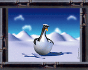 |
{kind=link}
Extended Overlay Framing
Also you can make this type of edge framing look even better by extending the frames beyond the bounds of the original image. This is often seen for a 'Home-Sweet-Home' type picture. To do this you will need to first enlarge the original image with lots of extra space into which the longer frame pieces are overlaid.
magick thumbnail.gif -alpha set -bordercolor none -border 34 \
\( -size 144x14 -tile-offset +30+0 tile:bamboo.gif -transpose \) \
-geometry +20+10 -composite \
\( -size 144x14 -tile-offset +45+0 tile:bamboo.gif -transpose \) \
-geometry +154+0 -composite \
\( -size 178x14 -tile-offset +60+0 tile:bamboo.gif \) \
-geometry +0+20 -composite \
\( -size 178x14 -tile-offset +0+0 tile:bamboo.gif \) \
-geometry +10+124 -composite \
frame_overlaid.gif
|
{kind=link}
45 degree corner joints
The better solution is to somehow add the framing images around the thumbnail in such a way as to actually create a 45 degree joint in each of the corners of the frame. This is not easy, and I went though a number of drawing and masking methods until I re-discovered a magical operator called Frame, 3D like Borders.
The solution then was simple. Read in the image, and "-frame" it, to create a template which of the areas to be framed.
|
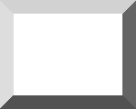 |
{kind=link}
For example...
|
![[IM Output]](frame_top_filled.gif)
|
|
![[IM Output]](frame_filled.gif)
|
|
![[IM Output]](frame_gold.png)
|
-tile-offset", so as to remove this mirror effect.
| Tile Offset setting was broken before IM version 6.3.9-9 in that the 'X' offset was being used for both 'X' and 'Y' offset values (the given 'Y' value was ignored). This means that the above example will probably incorrectly tile the bottom and right edges, in older releases of IM. |
|
{kind=link}
frame_edges.tar.gz" from the IM Example Scripts directory). This tar file includes the script and a set of framing images, that the script understands how to process and use. It also adds a 'cardboard' border between the frame and the image proper.